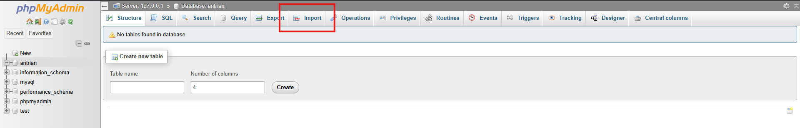
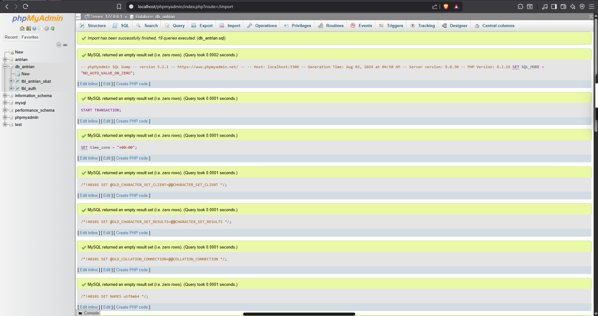
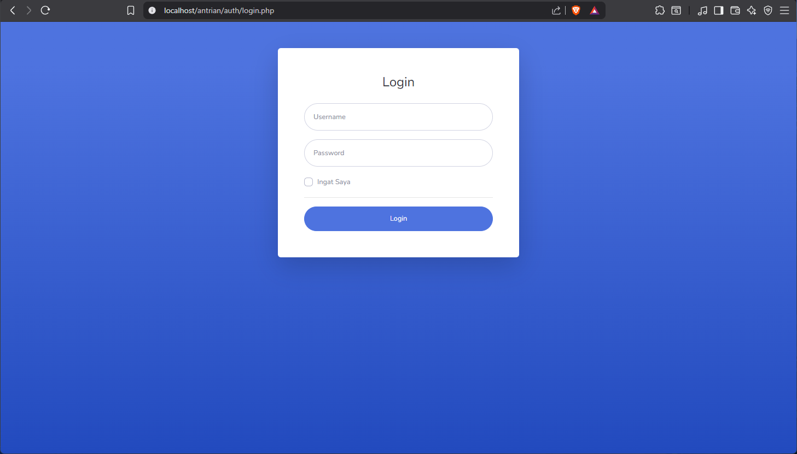
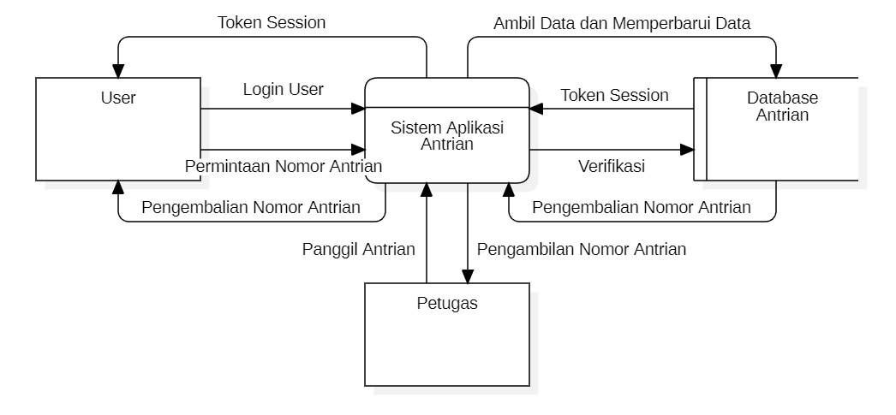

Pendahuluan
Threat modeling adalah metode terstruktur untuk mengenali, menilai, dan memitigasi potensi ancaman keamanan pada sebuah sistem. Tujuannya adalah menemukan titik-titik rentan sejak awal—seperti autentikasi tidak aman, kebocoran data, atau kemungkinan eskalasi hak akses—lalu menyusun langkah pencegahan baik secara teknis maupun prosedural. Pada artikel ini, proses threat modeling diterapkan pada aplikasi antrian berbasis PHP + MySQL dari repository galihap76/antrian sebagai contoh studi kasus.
Persiapan
1. Instalasi Server
- Unduh XAMPP melalui situs resmi: https://www.apachefriends.org/
- Jalankan layanan Apache dan MySQL dari XAMPP Control Panel.
- Cek apakah server aktif dengan membuka: http://localhost. Jika dashboard XAMPP muncul, berarti server sudah berjalan.

2. Instalasi Aplikasi Antrian
- Buka terminal dan masuk ke direktori web server (XAMPP/htdocs).
- Clone repository aplikasi:

3. Import Database
- Masuk ke phpMyAdmin dan buat database baru bernama antrian.

- Import file SQL yang berada di: antrian/assets/db_antrian.sql.

- Jika proses impor berhasil, database siap digunakan.

4. Menjalankan Aplikasi
Akses aplikasi melalui browser: http://localhost/antrian

Data Flow Diagram (DFD)
Diagram alur data menggambarkan bagaimana informasi mengalir dalam aplikasi antrian—mulai dari proses login, pengambilan nomor, hingga pemanggilan antrian oleh petugas. DFD memvisualisasikan hubungan antara pengguna, petugas, aplikasi, dan database.

Penjelasan Komponen Sistem
1. User (Entitas Eksternal)
Pengguna umum yang mengambil nomor antrian dan melihat perkembangannya.
Interaksi:
- Mengirim data login.
- Meminta nomor antrian.
- Menerima session token setelah berhasil login.
- Melihat status antrian terbaru.
2. Petugas (Entitas Eksternal)
Operator yang mengelola proses pemanggilan antrian.
Interaksi:
- Mengirim perintah untuk memanggil nomor berikutnya.
- Melihat daftar antrian aktif.
- Menerima hasil pembaruan data antrian.
3. Sistem Aplikasi Antrian (Proses Utama)
Berfungsi memproses seluruh permintaan dari user dan petugas.
Kemampuan:
- Memverifikasi login.
- Menghasilkan token session.
- Menambah, mengubah, dan membaca data antrian.
- Memberi status antrian terkini ke klien.
4. Database Antrian (Penyimpanan Data)
Menyimpan data penting, antara lain:
- User: username, password terenkripsi, role.
- Antrian: nomor antrian, waktu pembuatan, status (menunggu/dipanggil/selesai).
- Token/Session: token autentikasi.
Alur Proses Sistem
1. Login User
- User mengirim username dan password.
- Sistem memverifikasi ke database.
- Jika berhasil, sistem mengembalikan token session.
2. Pengambilan Nomor Antrian
- User mengajukan permintaan ambil nomor.
- Sistem mencatat nomor baru ke database.
- Nomor antrian dikirimkan kembali ke user.
3. Pemanggilan Antrian oleh Petugas
- Petugas meminta pemanggilan nomor selanjutnya.
- Sistem mengambil data dari database dan memperbarui status antrian.
- Status dikirim ke petugas.
4. Database Antrian (Penyimpanan Data)
- Setiap perubahan status dicatat di database.
- Informasi terbaru dikirimkan kepada user untuk mengetahui posisi antrian.
Kesimpulan
Threat modeling pada aplikasi antrian berbasis PHP dan MySQL membantu mengidentifikasi potensi celah keamanan sejak tahap awal pengembangan. Melalui pemahaman alur sistem, pembuatan DFD, serta analisis menggunakan pendekatan STRIDE dan penilaian risiko DREAD, dapat terlihat area-area kritis seperti autentikasi, manajemen session, validasi input, dan integritas data antrian. Dengan menerapkan langkah mitigasi yang tepat—misalnya penguatan kontrol akses, enkripsi, sanitasi input, dan hardening server—risiko keamanan dapat ditekan secara signifikan. Proses ini memastikan aplikasi antrian tidak hanya berfungsi sesuai kebutuhan, tetapi juga aman, andal, serta lebih siap menghadapi ancaman dunia nyata.